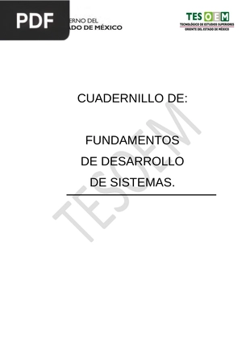
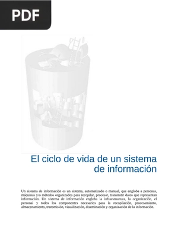
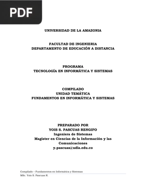

Lecturas
🤔 ¿Qué es la Ingeniería de Sistemas?
La Ingeniería de Sistemas es básicamente una carrera que trata sobre
la tecnología y cómo hacer que todo funcione bien junto. No solo es programar,
también tiene que ver con entender cómo funcionan los sistemas, cómo mejorar
cosas y cómo hacer que la tecnología sea útil en la vida diaria.
💡 ¿Por qué es importante?
Hoy en día, casi todo usa tecnología: los celulares, las aplicaciones, las páginas web, los sistemas
de las empresas… ¡hasta los videojuegos! La Ingeniería de Sistemas ayuda a crear y mejorar todo eso.
También permite que la información esté más segura y que los procesos sean más rápidos y eficientes.
💡 Áreas de aplicación
La Ingeniería de Sistemas abarca múltiples áreas, incluyendo:
Desarrollo de software y aplicaciones web.
Inteligencia artificial y machine learning.
Ciberseguridad y protección de datos.
Redes y telecomunicaciones.
Internet de las cosas (IoT).
Aquí tienes algunos libros recomendados que pueden enriquecer tu sección de lecturas y ampliar los temas relacionados con la Ingeniería de Sistemas:
📚 Libros Recomendados
#1 Enfoques, Teorías y Perspectivas de la Ingeniería de Sistema y sus Programas Académicos
Enfoques, Teorías y Perspectivas de la Ingeniería de Sistema y sus Programas Académicos
Extensión: PDF | 194 páginas
Enfoques, Teorías y Perspectivas de la Ingeniería de Sistema y sus Programas Académicos,
es un estudio que examina los fundamentos teóricos, históricos y las tendencias actuales en
la Ingeniería de Sistemas en Colombia.
#2 Fundamentos de desarrollo de sistemas
Fundamentos de desarrollo de sistemas
Extensión: PDF | 82 páginas
Fundamentos de desarrollo de sistemas, es un material que abarca conceptos esenciales en la ingeniería de software y el desarrollo
de sistemas. El documento proporciona una guía completa sobre los fundamentos del ciclo de vida del software,
metodologías, técnicas de recolección de información, y diseño y arquitectura de productos de software.

#3 El ciclo de vida de un sistema de información
El ciclo de vida de un sistema de información
Extensión: PDF | 42 páginas
El ciclo de vida de un sistema de información, es un documento que describe las etapas del desarrollo de sistemas de información,
incluyendo planificación, análisis, diseño, implementación, pruebas, instalación y mantenimiento.

4# Sistemas y Organizaciones
Sistemas y Organizaciones
Extensión: PDF | 536 páginas
Sistemas y Organizaciones es un texto que aborda la Teoría General de Sistemas y su aplicación en el contexto organizacional.
El autor ofrece un marco conceptual para entender los sistemas, sus componentes y
el control dentro de las organizaciones, enfatizando la importancia de una metodología adecuada para resolver problemas complejos.
"#5 Fundamentos en Informática y Sistemas
Fundamentos en Informática y Sistemas
Extensión: PDF | 58 páginas
Fundamentos en Informática y Sistemas, es un compendio que aborda las bases teóricas y prácticas de las tecnologías
de la información y la informática,
enfocándose en conceptos clave como sistemas, software y hardware, así como su aplicación en la educación a distancia.

recomiendo leer estos libros como pasatiempo si se tiene intereses en varios de esos temas, es una buena de forma
de llegar a comprender de mejor forma todo lo que nos concierne en esta carrera tan variada 🚀